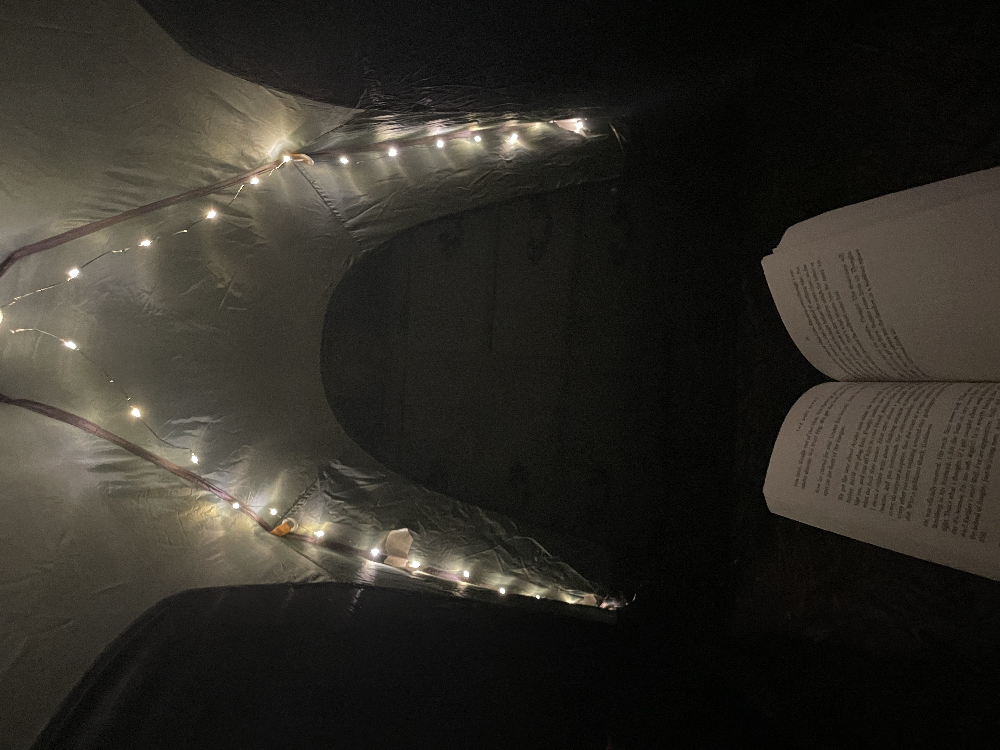
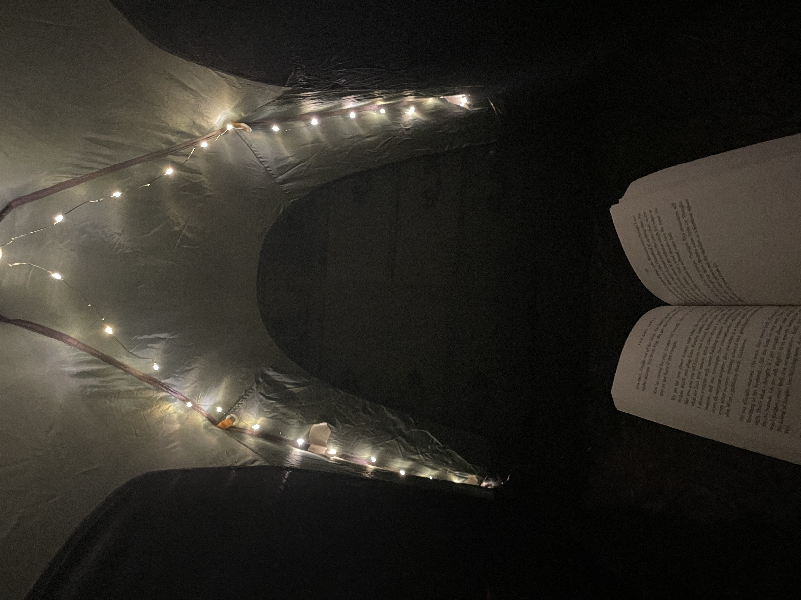
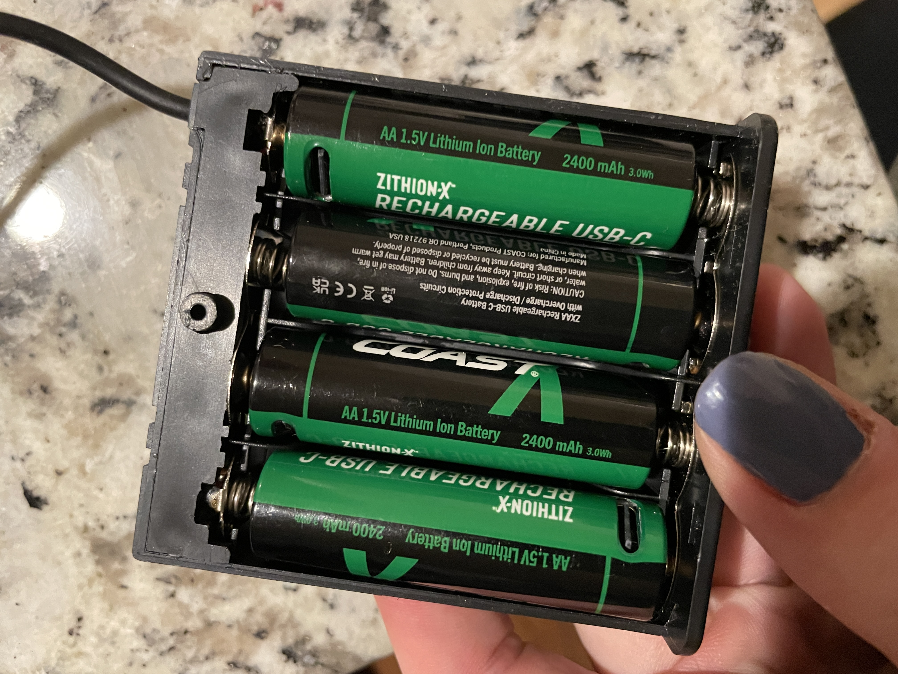
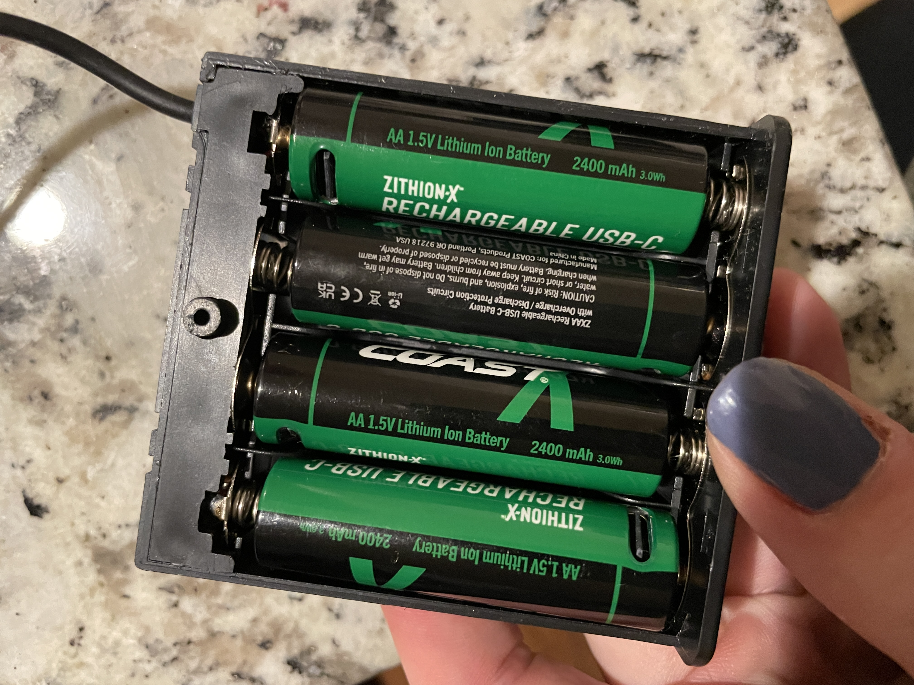

Materials Testing
This page highlights the thorough materials testing process behind the Nova Tent. Each component was carefully evaluated to ensure it met our standards for durability and overall performance.

Fabric Testing
Our fabric testing focused on finding the right balance between weight, comfort, and durability. We began with scrap fabric for the best financial and environmental practice. Through several iterations using more affordable nylon ripstop, we refined our understanding of the material qualities we needed. Ultimately, we selected Silpoly ripstop for the tent body—offering the lightweight feel and performance we were aiming for—and paired it with a heavier, more durable fabric for the floor to withstand ground contact. This hands-on process allowed us to explore different options and choose materials that best fit the Nova Tent's design goals.
Structural Components
Throughout the design process, we focused on balancing clip placement to ensure proper spacing, stability, and effective stress distribution across the frame. We experimented with 3D-printed clips and refined their positioning for optimal support. Various connection methods were tested for where the poles meet at the center, ultimately choosing a design that allowed the fabric to slip in easily for a secure fit. We also cut and tested different pole lengths to determine the ideal height and angle for the brow pole, improving both the tent's structure and interior space.

Lighting Intergration
Our lighting integration focused on finding a solution that balanced durability, flexibility, and effective illumination. We tested a variety of options, including LED strips and COB LED strips, but ultimately chose silicone-coated fairy lights for their lightweight design, flexibility, and enhanced durability. To create a soft, ambient glow, we experimented with different fabrics to achieve the best light diffusion. We also tested various lighting lengths and routing paths around the tent structure to ensure even coverage without interfering with usability. This process allowed us to seamlessly incorporate lighting that enhances comfort and visibility in any camping environment.

User Testing
We invited users to interact with the Nova Tent as if they were setting up camp, allowing us to observe real-world use and gather valuable feedback. Testers highlighted areas for improvement, including the need for larger, more flexible gear shelves, better pocket placement, and the addition of double pockets for improved storage efficiency. Feedback also led us to increase window size for better ventilation and views. Users consistently praised the spacious yet cozy feel of the tent, noting its tall structure and comfortable interior. The star-shaped window and adjustable lighting modes were standout features that enhanced the overall experience. To further validate performance, Fitz took the Nova Tent on a week-long adventure across the West, putting it to the test in a variety of environments—proving its functionality, comfort, and durability in true outdoor conditions.
Gallery

 


 
